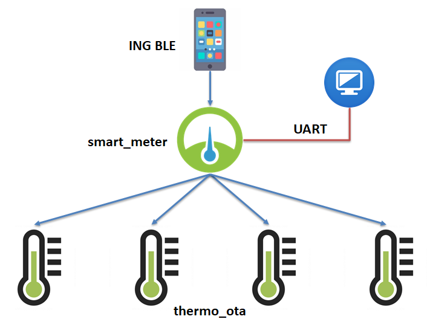

INGChips 为客户提供易用的 SDK，帮助客户便捷、高效地开发蓝牙产品。

本文演示通过 INGChips SDK 如何快捷地完成以下任务：
- 多角色并发
- 量产
BLE 链路层存在 4 种工作状态（当然还有一种“非工作”的待机状态）：
- 广播状态
- 扫描状态
- 发起状态
- 连接状态，连接的两端分为主（master）和从（slave）两种角色
BLE 还定义了四种 GAP 角色：
- Broadcaster：发送广播
- Scanner：接收广播
- Central：向外围设备（Peripheral）发起连接
- Peripheral：接受中心设备（Central）发起的连接
这四种 GAP 角色通过链路层不同的工作状态实现。比如扮演 Central 角色的设备首先使用 扫描状态查找外围设备，再通过发起状态发起连接，然后进入连接状态。在连接状态下， Central 角色的设备从链路层角度看又扮演了 master 角色。
INGChips 918xx 及 SDK 全面支持各种角色各种状态并发。
下面简要介绍 SDK 中内置的 smart_meter 示例的开发过程。smart_meter 作为中心设备，可以连接最多四个外围设备（四个 thermo_ota 温度计）；作为外围设备，
可与手机连接并将收集到的温度数据传输到手机。此外，smart_meter 通过 UART 口接受
上位机的控制，可以设置各温度计的地址、控制程序的启动等。

smart_meter 与手机的连接使用了一个自定义的 GATT 服务，通过这个服务在手机和蓝牙设备之间建立了
一个基于字符串的输入、输出通道。smart_meter 使用输出通道传输温度数据。有关这个自定义服务的使用
方法可参考 peripheral_console 示例。这个例子演示了如何利用这个服务实现简单的“空中”调试。
1. 使用项目向导创建一个 Peripheral 应用
使用向导工具设置广播数据和 GATT Profile。在 GATT Profile 里添加自定义的 GATT 服务。

2. 定义从设备（即温度计）
温度计设备用设备地址和 id 作为标识。每个设备占用一条独立的链路（conn_handle）。
typedef struct slave_info
{
uint8_t id;
bd_addr_t addr;
uint16_t conn_handle;
gatt_client_service_t service_thermo;
gatt_client_characteristic_t temp_char;
gatt_client_characteristic_descriptor_t temp_desc;
gatt_client_notification_t temp_notify;
} slave_info_t;
3. 扫描并连接到温度计
调用两个 GAP 函数开始扫描，一旦扫描到待连接的温度计，就停止扫描并调用
gap_ext_create_connection 发起连接。连接建立成功后，检查是否还有待连接的
温度计，如果有，再次开始扫描。
4. 发现服务
这部分功能需要调用一系列 gatt_client 模块的 API。这部分 API 的整体逻辑跟
Android、iOS 蓝牙 API 基本类似。
5. 数据传输
订阅温度数据，将温度转换成字符串，通过 UART 上传给上位机。如果已经连接到了中心设备（ING BLE app）， 则将数据通过自定义的 GATT 服务传输到中心设备。
6. 加入容错性
-
如果检查到与某温度计的连接断开，则再次开始扫描。
-
如果与中心设备的连接断开，则再次开始广播。
7. 准备蓝牙温度计
我们需要使用四个温度计，蓝牙地址互不相同。如何方便地写入不同的地址呢？在 Downloader 里写脚本！
Downloader 内置脚本引擎，开始下载每个 bin 文件时会调用用户编写的脚本。 通过脚本我们可以任意修改 bin 的内容。
将蓝牙地址写在一个 bin 文件内，然后添加到 Download 内（假设是第 6 个 bin 文件），下面的脚本 会按照下载次数修改蓝牙地址的第一个字节：
procedure OnStartBin(const BatchCounter, BinIndex: Integer;
var Data: TBytes; var Abort: Boolean);
begin
if BinIndex <> 6 then Exit;
Data[0] := BatchCounter;
end;
8. 测试
在上位机输入 start 命令启动 smart_meter，用手机连接到名为 ING Smart Meter 的设备，就可以看到
四个温度计上报的温度了。随机重启几个温度计，可以看到 smart_meter 能够自动重新建立连接。